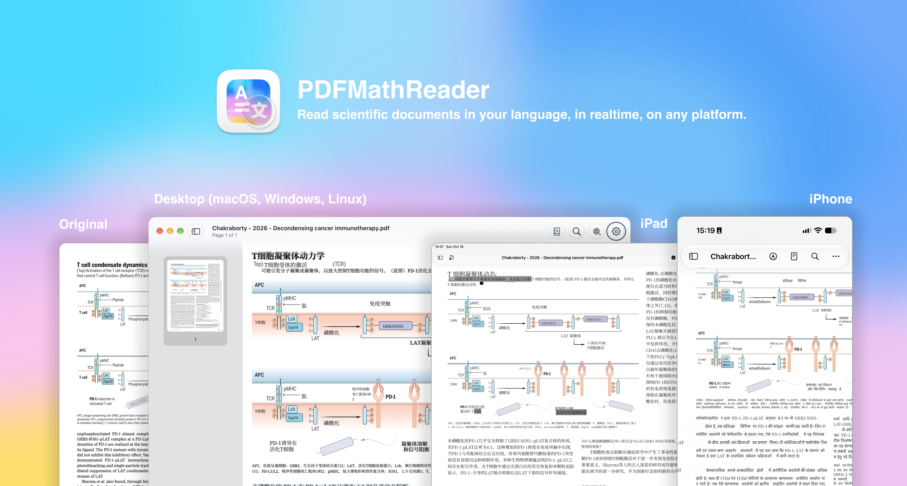

প্রথম অনূদিত অনুচ্ছেদ থেকে শেষ টীকা পর্যন্ত, গবেষণা পড়ার আপনার
ধরনকে ঘিরেই তৈরি।
মূল ও অনুবাদ, পাশাপাশি।
পড়তে পড়তেই বিন্যাস বিশ্লেষণ ও অনুবাদ করুন। অনুচ্ছেদের ওপর ওভারলে
বা সূত্র অক্ষুণ্ণ রাখা অনূদিত পৃষ্ঠা বেছে নিন—গতি ও সূক্ষ্ম
টাইপসেটিংয়ের মধ্যে ভারসাম্য বজায় রেখে।
অতি দ্রুত · PDF Inspector অনুচ্ছেদ ওভারলে
দ্রুত · PDFMathTranslate
নির্ভুল · PDFMathTranslate-next
আপনার পরিষেবা। আপনার ভাষা।
OpenAI-সামঞ্জস্যপূর্ণ API-এর মাধ্যমে প্রধান AI প্রদানকারী বা
কাস্টম পরিষেবা সংযুক্ত করুন। ইন্টারফেস, উৎস এবং লক্ষ্য ভাষা
আলাদাভাবে সেট করুন; কাস্টম ভাষা কোডও ব্যবহার করতে পারবেন।
একই পরিষেবা ও মডেলের অনুবাদ ক্যাশ থেকে পুনরায় ব্যবহার করুন।
অংশীদারদের দেওয়া বিনামূল্যের পরিষেবা অ্যাপে উপলভ্যতার ওপর নির্ভর
করে।
গুরুত্বপূর্ণ অংশগুলোকে আলাদা করে দেখান।
বিষয়বাক্য, বৈজ্ঞানিক ফলাফল ও যুক্তির সংযোগগুলোকে জোর দিন। TF-IDF
দিয়ে স্বতন্ত্র পরিভাষা হাইলাইট করুন, অথবা নির্দিষ্ট দৈর্ঘ্য বা
শব্দের মূলাংশে জোর দিয়ে বায়োনিক রিডিং চেষ্টা করুন।
দীর্ঘক্ষণ পড়ার জন্য ফন্ট, CJK টাইপোগ্রাফি ও মসৃণ স্ক্রলিং
সামঞ্জস্য করুন। মাউস হুইলের জন্য জোরপূর্বক মসৃণ স্ক্রলিং আলাদাভাবে
চালু করুন।
লেখার সঙ্গেই আপনার ভাবনা রাখুন।
মূল ও অনুবাদে হাইলাইট ও টীকা যোগ করুন। থাম্বনেইল, আউটলাইন,
অনুসন্ধান, দ্রুত লিঙ্ক ও গ্যালারি ভিউ দিয়ে নেভিগেট করুন। উইন্ডো
বা ট্যাব বদলান।
আপনার পড়ার ধরন অনুযায়ী রিডিং লেআউট, প্রস্থে ফিট, উচ্চতায় ফিট ও
জুম সেটিং বেছে নিন।
আপনার কম্পিউটারের অনুবাদ কার্নেল ভাগ করুন, দূরবর্তী ডিভাইস জোড়া
লাগান এবং সংযুক্ত ক্লায়েন্ট দেখুন। আট অক্ষরের পেয়ারিং কোডে সংযোগ
আরও সহজ।
উইন্ডো ছোট করুন। অনুবাদ চলতে দিন।
উইন্ডো ছোট করা থাকলেও সার্ভিস মোড অনুবাদ পরিষেবা চালু রাখে।
AirDrop-এর মতো টুল দিয়ে অ্যাপ ও ডিভাইসের মধ্যে নথি ভাগ করুন।
দূরবর্তী শেয়ারিংয়ের জন্য সংযোগযোগ্য কম্পিউটার ও নেটওয়ার্ক
প্রয়োজন। iOS অ্যাপটি আলাদা রিপোজিটরিতে দেওয়া হয়েছে।
আপনার পড়া। আপনার স্টাইল।
ফন্ট, অ্যাকসেন্ট রং, ডার্ক মোড এবং অ্যাপ আইকনের সম্পূর্ণ সংগ্রহ। একটি
আইকন বেছে নিয়ে আপনার PDFMathReader-এর প্রিভিউ দেখুন।
ডিফল্ট প্রিভিউ করা হচ্ছে। এতে শুধু ওয়েবসাইটের প্রিভিউ বদলায়।
একটি পৃষ্ঠা পড়ুন। নিজেই অনুভব করুন।
প্রস্তুত অনুবাদ বেছে নিন, মূল পাঠ দেখতে অনুচ্ছেদে ক্লিক করুন বা জুম
বদলান।
এই নমুনায় অ্যাপের নতুন PDF ও একটি স্থির অনুবাদ ফাইল ব্যবহার করা
হয়েছে। এখানে কোনো কার্নেল বা অনুবাদ পরিষেবা চলে না। নিজের নথি অনুবাদ
করতে অ্যাপ ডাউনলোড করুন।

আপনার পরের গবেষণাপত্র। আপনার ভাষায়।
ওপেন সোর্স, আর নিয়মিত উন্নত হচ্ছে। আপনার প্ল্যাটফর্ম বেছে নিন।
অনুবাদের জন্য একটি উপলভ্য পরিষেবা ও নেটওয়ার্ক অ্যাক্সেস দরকার;
কিছু প্রদানকারী API ফি নিতে পারে। Fast ও Precise চালাতে uv-এর
মাধ্যমে সংশ্লিষ্ট কার্নেল ইনস্টল করতে হবে। জটিল বিন্যাস
টাইপসেটিংয়ের নিখুঁততায় প্রভাব ফেলতে পারে। প্ল্যাটফর্ম ও পরিষেবা
সমর্থনের জন্য প্রকল্পের ডকুমেন্টেশন দেখুন।
পরীক্ষামূলক ফিচারের মধ্যে রয়েছে অনুচ্ছেদ অব্যাহত থাকার শনাক্তকরণ,
স্থানীয় সূচিপত্র তৈরি এবং ঐচ্ছিক রিমোট zotero-pdf2zh সার্ভার।
রিমোট Precise সার্ভার আলাদাভাবে ডিপ্লয় করতে হবে; এটি বান্ডেলে
নেই। টেক্সট লেয়ারবিহীন স্ক্যান করা নথির জন্য উপযুক্ত OCR সমর্থন
দরকার।